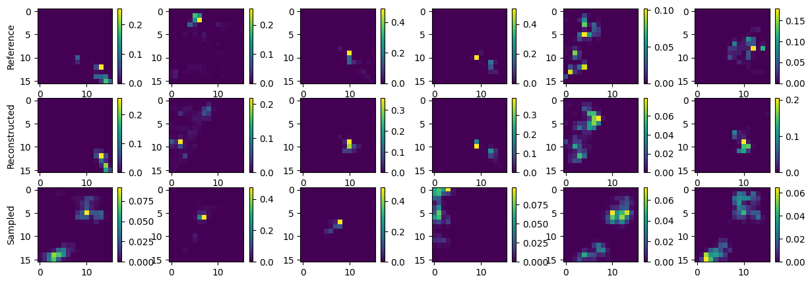

Projects
Where I store a brief 2-second summary of my projects. A github link gets thrown in the mix, too.
Translation between SDSS and MaNGA Data
 Building off previous work done by Finn, this project was a proof of concept of the utilization of the structured latent space of Variational Autoencoders and VQ-VAEs to translate between two types of spectral data. MaNGA data is considered to be a more informative representation of galactic spectra, but is more difficult to obtain. This work aims to get an approximation of that data given a much more readily available data found in SDSS sampling. My role in this project was to aid in the creation of the autoencoders themselves.
Introduction to Reinforcement Learning - 05/2024
 An informal lecture series trying to demistify reinforcement learning, providing the basic understandings and
providing boilerplate templates for tabular Q-learning in python.
You can find the slides and accompanying colab below:
An informal lecture series trying to demistify reinforcement learning, providing the basic understandings and
providing boilerplate templates for tabular Q-learning in python.
You can find the slides and accompanying colab below:
- Environments, MDP’s, Basic Paradigms
- Agents, Policies, Q-functions
- Q-learning Implementation, Boilerplate Code
- Q-learning Implementation, Full Code (Done live)
Improving VAE Generative Capabilities with Kernel Density Estimation - 03/2024
 This was a project done in SENG 474, taught my Alex Thomo. It analyzes the generative capabilities a variational autoencoder has by sampling its latent space,
which is traditionally done by taking samples from gaussian distributions. I demonstrated that KDE would provide a better approximation of the generative capabilities.
This was a project done in SENG 474, taught my Alex Thomo. It analyzes the generative capabilities a variational autoencoder has by sampling its latent space,
which is traditionally done by taking samples from gaussian distributions. I demonstrated that KDE would provide a better approximation of the generative capabilities.
This project was awarded 100%.
Colab Notebook
Optimal Power Distribution for a Cycling Individual Time Trial Using Reinforcement Learning - 11/2023
This was a group project done with 3 other members for Math 377, taught by Treffor Bazett. We used DQN to model the optimal power distribution for an agent
going through a race, given some constraints.
This project was awarded a 98%.
Github Repo
Introduction to Variational Auto Encoders - ?/2023
This was my pre-requisite project that helped me really understand what machine learning was. A much better entry point for a beginner. I took this on in my second term of second year, to help me prepare for a more research based project with astronomy data.
Tetris + DQN - ?/2022
My first ever reinforcement learning project, in the spring of my first year. DQN was implemented with many tears involved. I had no business starting my machine learning journey here. It shows as well. This is awful.